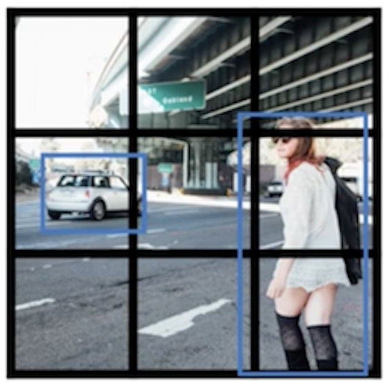

5.7 YOLO算法
学习目标
- 目标
- 掌握YOLO算法原理以及训练损失计算公式
- 应用
- 无
在正式介绍YOLO之前，我们来看一张图：

可以看出YOLO的最大特点是速度快。YOLO在精度上仍然落后于目前最先进的检测系统。虽然它可以快速识别图像中的目标，但它在定位某些物体尤其是小的物体上精度不高。论文中做了精度／时间的权衡。接着之前在概述中所介绍的，进入到真正端到端的目标检测：直接在网络中提取特征来预测物体分类和位置。

YOLO算法系列的演变过程：YOLO->YOLO9000->YOLOv2->YOLOv3
5.7.1 YOLO介绍
YOLO是一种新的目标检测方法。以前的目标检测方法通过重新利用分类器来执行检测。与先前的方案不同，将目标检测看作回归问题从空间上定位边界框（bounding box）并预测该框的类别概率。使用单个神经网络，在一次评估中直接从完整图像上预测边界框和类别概率。由于整个检测流程仅用一个网络，所以可以直接对检测性能进行端到端的优化。
5.7.1.1 YOLO结构
YOLO是很简单直观的图像处理系统，整个过程分为三步：
1、把图像缩放到448X448
2、在图上运行卷积网络
3、根据模型的置信度对检测结果进行阈值处理
一个网络搞定一切，网络结构如下：

论文中的网络架构受GoogleNet的启发，使用网络有24个卷积层，后面是2个全连接层。只使用1×1降维层，后面是3×3卷积层。没有使用Inception模块。
论文还使用训练了一个快速版本的YOLO，旨在推动快速目标检测的界限。快速YOLO使用具有较少卷积层（9层而不是24层）的神经网络，在这些层中使用较少的滤波器。基本版YOLO和快速YOLO网络的最终输出是7×7×30的预测张量。
5.7.1.2 统一检测过程理解
- 1、原始图片resize到448x448，经过前面卷积网络之后，将图片输出成了一个7 x 7 x 30的结构
怎么理解这个过程？系统将输入图像分成S×S的网格。如果目标的中心落入某个网格单元中，那么该网格单元就负责检测该目标。
以图示的方式演示，默认7 x 7个单元格，这里用3 x 3的单元格图演示
2、每个网格单元都会预测B个边界框和这些框的置信度分数（confidence scores）

3、进行NMS筛选,筛选概率以及IoU


5.7.1.3 单元格(grid cell)
上面第二步是理解YOLO网络的关键。图片输入到YOLO之后只会得到7 x 7 x 30的输出结果。每个网格单元都会预测B个边界框和这些框的置信度分数（confidence scores），这些置信度分数反映了该模型对那个框内是否包含目标的信心，以及它对自己的预测的准确度的估量。
置信度与边界框
最后网络输出的7 x 7 x 30的特征图怎么理解？7 x 7=49个像素值，理解成49个单元格，每个单元格可以代表原图的一个方块。单元格需要做的两件事：
每个边界框包含两个目标预测，每个目标包括5个预测值：x，y，w，h和置信度
每个单元格预测两个(默认)bbox位置，两个bbox置信度(confidence) ： 7 x 7 x 2=98个bbox
- 30=(4+1+4+1+20), 4个坐标信息，1个置信度(confidence)代表一个bbox的结果， 20代表 20类的预测概率结果
5.7.1.4 网格输出筛选
1、置信度计算比较
Pascal VOC上评估YOLO，使用最终大小S=7，预测数量B=2。
- 一个网格会预测两个Bbox，在训练时我们只有一个Bbox专门负责（一个Object 一个Bbox）
那么如何对每个位置预测的两个bbox进行筛选？
通过置信度大小比较：
评估标准：每个单元格的两个bounding box会通过一个计算的confidence score比较（2个bounding box的IOU，哪个比较大（更接近对象实际的bounding box），就由哪个bounding box来负责预测该对象是否存在）前提是这个单元格包含物体
- 定义：
- 1、如果grid cell里面没有object，所有bbox设置的confidence就是0
- 2、如果含有目标的，则confidence score等于 预测的box和ground truth的IOU乘积

所以如何判断一个grid cell中是否包含object呢？如果一个图片中真实的object的ground truth的中心点坐标在一个grid cell中，那么这个grid cell就是包含这个object，也就是说这个object的预测就由该grid cell负责。
注意：上面评估计算是为了设置两个bbox的目标值，如果该单元格有物体，那么其中一个bbox的位置坐标与GT计算IoU值大的就是1。负责预测这个单元格的物体坐标。
下图是网络真实输出的置信度score和我们进行比较设置的目标值如下图对比。

2、预测位置大小-回归offset代替直接回归坐标
每个 bbox 包含5个预测值, (𝑥,𝑦,𝑤,ℎ,𝑐𝑜𝑛𝑓𝑖𝑑𝑒𝑛𝑐𝑒)，不直接回归中心点坐标数值，而是回归相对于格点左上角坐标的位移值
- 1、(𝑥,𝑦) 表示 box 的中心相对于 grid cell 原点的偏移值(原点, 即每个 grid cell 的 top-left 顶点, yolo 将之设置为(0, 0), bottom-right顶点设置为(1, 1), 所以 (𝑥,𝑦) 取值范围一定在(0,1)之内).
- 2、(𝑤,ℎ) 为相对于整张图片的宽和高, 即使用图片的宽和高标准化自己, 使之取值范围也在(0, 1)之间.
为什么这样去做？
- 预测相对于网格单元位置的位置坐标。这使得真实值的界限在0到1之间。由于我们限制位置预测，因此参数化更容易学习，从而使网络更加稳定
举例理解：
如前所述，bx、by、bh和bw是相对于正在处理的网格单元计算而言的。下面通过一个例子来说明这一点。以包含汽车的右边网格为例：

由于bx、by、bh和bw将仅相对于该网格计算。此网格的y标签将为（假设总共只有3个类别，分别是行人（c1）、汽车（c2）和摩托车（c3），这里就不拿20类别举例了）：
y=(1, bx, by, bh, bw, 0, 1, 0)
由于这个网格中有一个对象为汽车，所以pc=1, c2=1，现在，我们看看如何决定bx,by,bw,bh的取值，论文中分配给所有网格的坐标如下图所示

bx和by是相对于该网格中物体的中心点的x和y坐标，刚才这个例子中，假设近似bx=0.4和by=0.3：

bh是边界框的高度与相应单元网格的高度之比，如图中假设bh=0.9，同理bw=0.5。所以最后预测的结果应该为：
y=(1, 0.4, 0.3, 0.9, 0.5, 0, 1, 0)
注：bx和by将始终介于0和1之间，因为中心点始终位于网格内，而在边界框的尺寸大于网格尺寸的情况下，bh和bw可以大于1。
3、测试阶段
- yolo 预测的不是类的概率而是类的条件概率, 即条件为如果这个 cell 中包含物体(条件)，那么这个物体是N 类前景中每一类的概率;
- 即每个框有20个概率值，但是并不会直接使用这个值，这个概率可以理解为不属于任何一个bbox，而是属于这个单元格所预测的值。
最终：测试的时候，条件类概率和每个框的预测的置信度值相乘得到每个框特定类别的置信度分数。这些分数体现了该类出现在框中的概率以及预测框拟合目标的程度。

理解：这个乘积即 encode 了预测的 box 属于某一类的概率，也有该 box 准确度的信息。得到每个 box 的 class-specific confidence score 以后，设置阈值，滤掉得分低的 boxes，对保留的 boxes 进行 NMS 处理，就得到最终的检测结果。

非最大抑制(NMS)
每个Bbox的Class-Specific Confidence Score以后，设置阈值，滤掉概率的低的bbox，对每个类别过滤IoU，就得到最终的检测结果

5.7.1.5 训练
背景
论文中使用的YOLO模型事先ImageNet的1000类竞赛数据集上预训练的卷积层。对于预训练，使用比较了基本版本YOLO中的前20个卷积层，接着是平均池化层和全连接层。对这个网络进行了大约一周的训练，并且在ImageNet 2012验证集上获得了单一裁剪图像88%的top-5准确率，最后将转换模型来执行检测训练。使用Darknet框架进行所有的训练和推断。
1、训练损失
通过图像宽度和高度来规范边界框的宽度和高度，使它们落在0和1之间。将边界框x和y坐标参数化为特定网格单元位置的偏移量，所以它们的值被限定在在0和1之间。

- 损失
- 三部分损失 bbox损失+confidence损失+classfication损失
模型输出的平方和误差进行优化。选择使用平方和误差，是因为它易于优化。但是由此不会得到很理想的结果。
1、因为分类误差与定位误差的权重是一样的，但是粒度并不一样；2、并且每个图像都有很多网格单元并没有包含任何目标，这将这些单元格的“置信度”分数定位零，通常压制了包含目标的单元格的梯度。这可能导致模型不稳定，从而导致训练在早期就发散。
- 解决办法：
- 为了弥补平方和误差的缺陷，增加了边界框坐标预测的损失，并减少了不包含目标的框的置信度预测的损失。
- 使用两个参数λcoord和λnoobj来实现这一点。 实验设定λcoord= 5和λnoobj= .5。
- 下面包含：bbox，confidence,categories的损失

注：其中表示目标是否出现在网格单元i中，表示单元格i中的第j个边界框预测器负责该预测。
函数第1部分 ： 负责坐标信息 (x,y,w,h) 的预测。这里不是直接对 w,h 直接进行计算，而是开根后计算损失函数是为了减少大小差别较大的边界框之间的差距
函数第2部分 ： 含 object 的 box 的 confindence 预测
函数第3部分 ： 不含 object 的 box 的 confindence 预测。所有分格中，不包含物体中心坐标的格子占大多数，所以累计起来 第三部分的数值会很大，为了平衡相互之间的大小关系，这里乘以了一个 0.5 的系数
函数第4部分 ： 对具有类别中心的格子进行类别预测
理解：只有当某个网格中有 object 的时候才对 classification error 进行惩罚。只有当某个 box predictor 对某个 ground truth box 负责的时候，才会对 box 的 coordinate error 进行惩罚，而对哪个 ground truth box 负责就看其预测值和 ground truth box 的 IoU 是不是在那个 cell 的所有 box 中最大。
2、训练细节
- 1、YOLO模型分为两部分，分类模型和检测模型，前者使用在ImageNet上预训练好的模型，后者在检测数据集上fine-tuning。
- YOLOv1在预训练时采用的是224x224的输入（在ImageNet数据集上进行），然后在检测的时候采用448x448的输入，这会导致从分类模型切换到检测模型的时候，模型还要适应图像分辨率的改变。
- 2、用Pascal VOC 2007和2012的训练集和验证数据集进行了大约135个迭代的网络训练。因为仅在Pascal VOC 2012上进行测试，所以训练集里包含了Pascal VOC 2007的测试数据。在整个训练过程中，使用的批量大小是64，动量为0.9，衰减率是0.0005。
3、学习率变化如下：在第一个迭代周期，将学习率从0.001慢慢地提高到0.01。如果从大的学习率开始训练，模型通常会由于不稳定的梯度而发散。继续以0.01进行75个周期的训练，然后以0.001进行30个周期的训练，最后以0.0001进行30个周期的训练。
4、为避免过拟合，使用了Dropout和大量的数据增强。 在第一个连接层之后的dropout层的丢弃率设置为0.5，以防止层之间的相互适应。 对于数据增强，引入高达20％的原始图像大小的随机缩放和平移。还在HSV色彩空间中以高达1.5的因子随机调整图像的曝光度和饱和度。
5.7.2 与Faster R-CNN比较
Faster R-CNN利用RPN网络与真实值调整了候选区域，然后再进行候选区域和卷积特征结果映射的特征向量的处理来通过与真实值优化网络预测结果。而这两步在YOLO当中合并成了一个步骤，直接网络输出预测结果进行优化。
所以经常也会称之为YOLO算法为直接回归法代表，特点是快速。以下为PASCAL VOC 2007上的实时系统测试：


快速YOLO是PASCAL上最快的目标检测方法；据我们所知，它是现有的最快的目标检测器。具有52.7%的mAP，实时检测的精度是以前的方法的两倍以上。普通版YOLO的mAP达到63.4%的同时保持了实时性能。
论文还使用VGG-16训练YOLO。 这个模型比普通版YOLO更精确，但也更慢。 它的作用是与依赖于VGG-16的其他检测系统进行比较，但由于它比实时更慢，所以本文的其他部分将重点放在我们更快的模型上。
- Faster R-CNN的VGG-16版本比YOLO高出10mAP，但比YOLO慢了6倍。
5.7.3 YOLO总结
- 优点
- 第一YOLO速度非常快。由于我们将检测视为回归问题，所以我们不需要复杂的流程。测试时，我们在一张新图像上简单的运行我们的神经网络来预测检测结果。在Titan X GPU上不做批处理的情况下，YOLO的基础版本以每秒45帧的速度运行
- 第二YOLO是在整个图像上进行推断的：与基于滑动窗口和候选框的技术不同，YOLO在训练期间和测试时都会顾及到整个图像，所以它隐式地包含了关于类的上下文信息以及它们的外观。与Fast R-CNN相比，YOLO的背景检测成目标的误检数量少了一半。
- 第三YOLO能学习到目标的泛化表征。把在自然图像上进行训练的模型，用在艺术图像进行测试时，YOLO大幅优于DPM和R-CNN等顶级的检测方法。由于YOLO具有高度泛化能力，因此在应用于新领域或碰到意外的输入时不太可能出故障。
- 缺点
- 准确率会打折扣
- YOLO对相互靠的很近的物体（挨在一起且中点都落在同一个格子上的情况），还有很小的群体检测效果不好，这是因为一个网格中只预测了一个结果。
- 如图像中包含畜群或鸟群时，每个格子包含多个物体，但却只能检测出其中一个。
5.7.4 总结
- YOLO算法原理以及训练损失计算公式